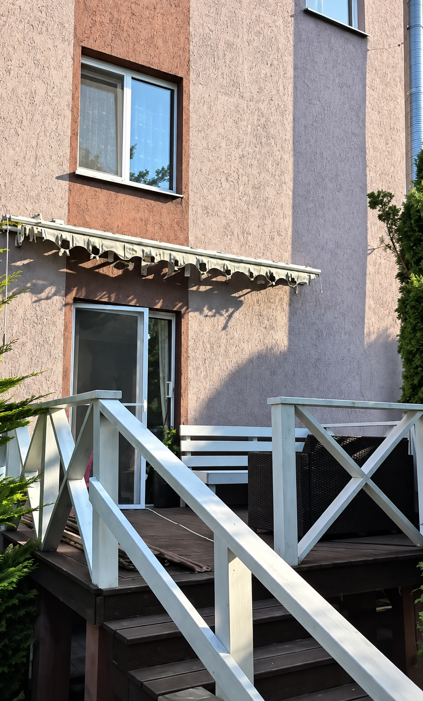
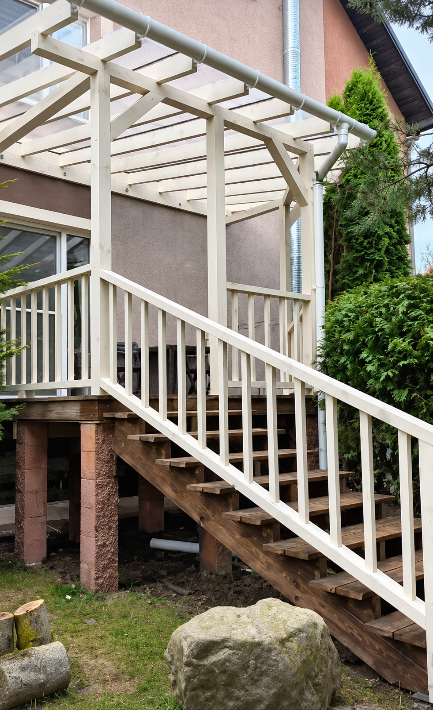

Сделано
руками.
Публикации мастерской с готовыми объектами и процессом работы.
Терраса: до и после.
Терраса у дома: навес, ограждения и лестница. Кадры из публикации обработаны для большей чёткости.


Работа с чердачным пространством
Посмотрите публикацию Aniswood с этим проектом в Instagram.
Открыть публикацию ↗